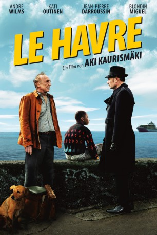

#2407 Le Havre
 
 IMDB-Wertung: 7.2 / 10
IMDB-Wertung: 7.2 / 10  Metascore: 82
Metascore: 82 
Marcel Marx, früher Autor und wohlbekannter Bohemian, hat sich vor längerer Zeit in sein frei gewähltes Exil, die Hafenstadt Le Havre, zurückgezogen. Hier geht er inzwischen der Tätigkeit eines Schuhputzers nach. Der Traum vom literarischen Durchbruch ist längst begraben, und so führt er ein zufriedenes Leben zwischen Arbeit, Bar und seiner Frau Arletty. Doch plötzlich kreuzt das Schicksal seinen Weg in Gestalt eines minderjährigen Flüchtlings aus Afrika.
Jahr: 2011
Dauer: 93 Minuten
FSK: 0
Land: Finnland Studio: Pandora Film VerleihTonspuren:
Untertitel:
Auflösung: 1080p (1920x1040) Größe: 9451 MB
Genre: Komödie, Drama
Regisseur: Aki Kaurismäki
Drehbuch: Aki Kaurismäki
Soundtrack:
Darsteller:
 André Wilms als Marcel Marx
André Wilms als Marcel Marx Kati Outinen als Arletty
Kati Outinen als Arletty Jean-Pierre Darroussin als Monet
Jean-Pierre Darroussin als Monet- Blondin Miguel als Idrissa
- Pierre Étaix als Docteur Becker
 Jean-Pierre Léaud als Le dénonciateur
Jean-Pierre Léaud als Le dénonciateur- Christophe Perez als Policier centre de rétention , uncredited
- Elina Salo als Claire
- Evelyne Didi als Yvette
- Quoc Dung Nguyen als Chang
- Laïka als Laïka - Dog
- François Monnié als Epicier
- Little Bob als Little Bob
- Vincent Lebodo als Francis
- Umban U'kset als Mahamat Saleh
- Patrick Bonnel als Le directeur du centre de rétention
- Ilkka Koivula als L'Italien
- Myriam 'Mimie' Piazza als Mimie
- Luce Vigo als La vendeuse de sandwiches
- Valérie Caron als Eoupse épicier
- Jérôme Boyer als Policier frontière
- Jean-Luc Guion Firmin als Réfugié Calais
- Pierre Morineau als Gardien de nuit containers
- Johann Rioux als Commandant CRS
- Julien Flematti als CRZ zélé
- Eric Duteil als Médecin
- Corinne Belet als Infirmière
- Dominique Lepagne als Infirmière
- Anne Lizy als Infirmière
- Pierre Richards als Employé dock
- Loïc Jamet als Employé dock 2
- Nico Garotin als Membre group Little Bob
- Bertrand Couloume als Membre group Little Bob
- Nicolas Noël als Membre group Little Bob
- Gilles Mallet als Membre group Little Bob
- Gilles Adam als Pilier bar La Moderne / Préfet
- Patrick Leboucher als Pilier bar La Moderne
- Michel Lacaille als Pilier bar La Moderne
- Stéphane Livonnen als Pilier bar La Moderne
- Arnaud Clément als Client bar La Moderne
- Dominique Comont als Client bar La Moderne
- Alain Guillot als Client bar La Moderne
- Philippe Hubschwerlin als Client bar La Moderne
- Franck Durand als Client bar La Moderne
- Christian Amyard als Docker
- Rudy Amyard als Docker
- Brice Augé als Docker
- Lucas Loubaresse als Tueur
- Ireneusz Spiewak als Tueur
- Gilles Charmant als Vendeur de chaussures
Datei: X:\2011(G-M)\Le Havre (2011, FSK0, 1920x1040).mkv seit 05.11.2015
Festplatte: HD 2011(G-Z)
 Es gibt insgesamt 100 Filme in der Gruppe '2011(G-M)'
Es gibt insgesamt 100 Filme in der Gruppe '2011(G-M)'